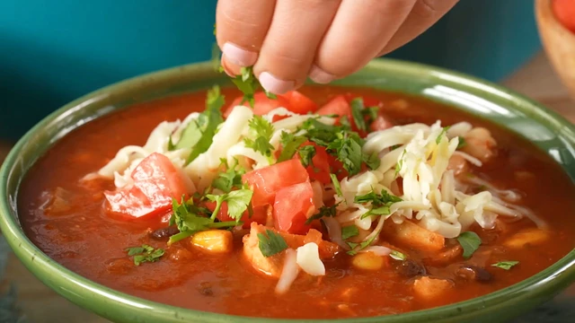

Chicken Tortilla Soup

Chicken tortilla soup
This chicken tortilla soup with shredded chicken, black beans, and corn is quick to make, full of flavor, and very filling! It's garnished with chopped fresh avocado, Monterey Jack cheese, crushed tortilla chips, and green onion. This soup freezes well.
Ingredients
- 1 tablespoon olive oil
- 1 medium onion, chopped
- 3 cloves garlic, minced
- 1 (28 ounce) can crushed tomatoes
- 1 (10.5 ounce) can condensed chicken broth
- 1 ¼ cups water
- 2 teaspoons chili powder
- 1 teaspoon dried oregano
- 1 (15 ounce) can black beans, rinsed and drained
Steps
- Heat oil in a stockpot over medium heat. Add onion and garlic; saute until soft, about 5 minutes. Stir in crushed tomatoes, condensed broth, water, chili powder, and oregano; bring to a boil. Reduce heat and simmer for 5 to 10 minutes.
- Stir in black beans, cooked chicken, corn, hominy, chile peppers, and cilantro. Simmer for 10 minutes.
- Ladle soup into individual serving bowls, and top with crushed tortilla chips, avocado slices, Monterey Jack cheese, and green onions.
Return to main page